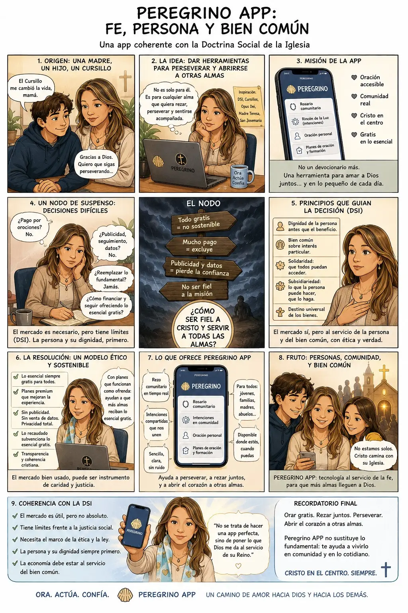

Historieta completa
Fe, persona y bien común
La historia de cómo Peregrino APP busca poner la tecnología al servicio de la oración, la comunidad y la dignidad de cada persona.

Historieta completa
La historia de cómo Peregrino APP busca poner la tecnología al servicio de la oración, la comunidad y la dignidad de cada persona.
